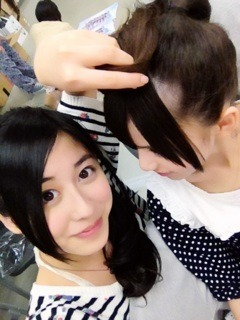

| 2012/06 06 Wed | やばいっ♪♪(o・ω・)ノ)) |
とりゃーっ
おはようございます♡
やばい！
やばい！
昨日、英語のテストが返ってきたんですけど...
なんと...
100点とれましたーっヽ(；▽；)ノ

やったあやったあ
 ！
！
！
初めて100点とったよーヽ(；▽；)ノ
まさかのまさかでしたね。
うんうん。
ヽ(•̀ω•́ )ゝ✧きらりん
１番好きな教科だからねー。
発音は悪いけど。笑
うれしい(o>ω<o)

つぎも頑張るぞーっヽ(；▽；)ノ
さてさてー、
土曜日は、いよいよ広島にお邪魔しますっ
 ♡
♡
♡
初☆広島だから楽しみすぎる(o>ω<o)
乃木どこが広島での放送が始まった記念ですねー♪
ぱちぱち！
存分にPRしてくるぞっ( ´ ▽ ` )ﾉ
今日は友達にBUMPの新しいアルバムを何枚か借りたから
それをめっちゃリピってるなう♡！
Kとかねー、
プラネタリウムとか、
アルエとか、
オンリーロンリーグローリーとかが
個人的に好きやあ

へへ( ´ ▽ ` )ﾉ♡
今日は席替えやるっぽい(o>ω<o)
いまの席けっこう好きなんだけどなあー。
でもみんなともっと仲良くなれるチャンスだっ(^^)/
いい席げっとしてきますぜヽ(•̀ω•́ )ゝ✧

もはやなにがしたいかわからない。
ヽ(•̀ω•́ )ゝ✧
笑
ぢゃねっ
今日の広島へのリハも、もちろん頑張ってきます
ばいるんっ
るんるんっ
ちはるんっ
♪♪(o・ω・)ノ))
コメント(76)
2012/06/06 07:36